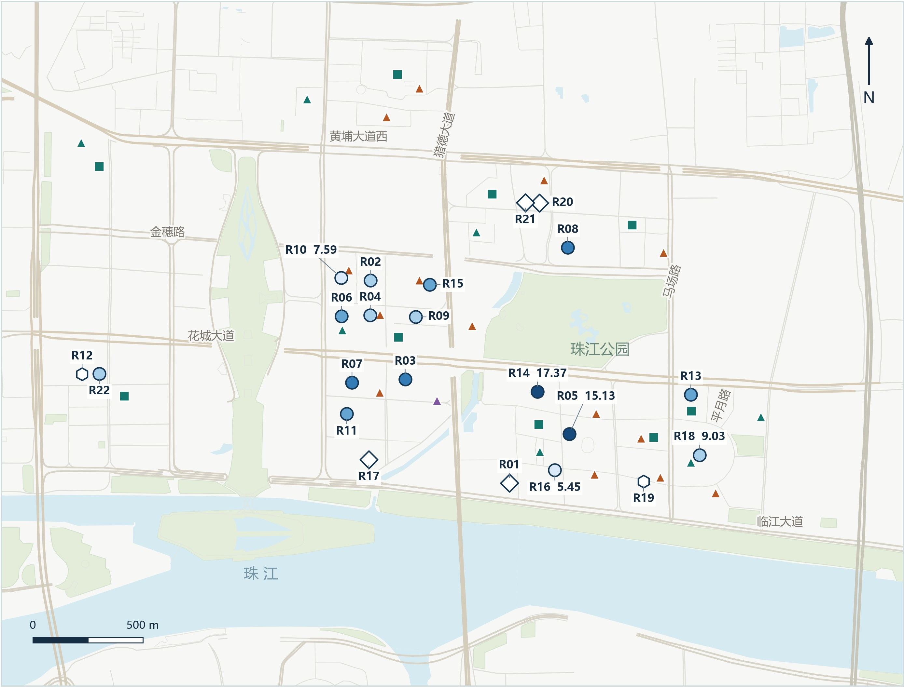

<!doctype html>
<html lang="zh-CN">
<head>
<meta charset="UTF-8" />
<meta name="viewport" content="width=1080" />
<title>方案A 学术清晰 · 住得近，就能读得上吗？</title>
<link rel="stylesheet" href="../../shared/base.css" />
<style>
  :root {
    --navy: #12304a; --teal: #17766c; --teal-l: #e3f0ee; --amber: #c9772b; --ink: #17222c; --muted: #5b6874; --line: #d5dde3; --bg: #f6f7f5;
    --ch-low: #9cc3df; --ch-high: #1f5687; --ch-a: #17766c; --ch-b: #8a55a8; --ch-ink: #17222c; --ch-muted: #6b7783; --ch-grid: #e3e8ec;
  }
  .poster { background: var(--bg); color: var(--ink); font: 400 15px/1.6 "NSans"; display: flex; flex-direction: column; }
  .pad { padding-left: 48px; padding-right: 48px; }
  h2 { font: 700 23px/1.25 "NSans"; color: var(--navy); }
  .sec { display: flex; align-items: center; gap: 10px; font: 700 15px/1 "NSans"; color: var(--teal); letter-spacing: .04em; margin-bottom: 8px; }
  .sec i { font: 500 13px/1 "Mono"; font-style: normal; color: #fff; background: var(--teal); padding: 4px 6px; border-radius: 3px; }
  .cap { font-size: 12px; line-height: 1.45; color: var(--muted); margin-top: 4px; }

  header { background: var(--navy); color: #fff; padding-top: 22px; padding-bottom: 18px; position: relative; overflow: hidden; }
  header::after { content: ""; position: absolute; right: -60px; top: -60px; width: 330px; height: 330px; border-radius: 50%; border: 46px solid rgba(255,255,255,.05); }
  .top { display: flex; justify-content: space-between; font: 500 13px/1 "Mono"; color: #9fb6c8; letter-spacing: .06em; }
  h1 { font: 700 66px/1.08 "NSans"; letter-spacing: -.01em; margin-top: 12px; }
  h1 span { color: #7fd1c4; }
  .sub { font: 400 20px/1.4 "NSans"; color: #c9d7e2; margin-top: 6px; }
  .meta { display: flex; gap: 26px; margin-top: 10px; font-size: 13.5px; color: #c9d7e2; flex-wrap: nowrap; white-space: nowrap; }
  .meta b { color: #fff; font-weight: 700; margin-right: 8px; }
  .meta.ev b, .meta .ev b { display: inline-grid; place-items: center; width: 20px; height: 20px; border-radius: 3px; background: #7fd1c4; color: var(--navy); margin: 0 4px 0 8px; font-size: 12px; }

  .rq { background: var(--teal-l); padding-top: 11px; padding-bottom: 11px; display: grid; grid-template-columns: 112px 1fr; gap: 14px; border-bottom: 1px solid var(--line); }
  .rq .lab { font: 700 15px/1.5 "NSans"; color: var(--teal); }
  .rq p.q { font: 700 18px/1.45 "NSans"; color: var(--navy); }
  .rq p.a { font-size: 15px; color: var(--ink); margin-top: 4px; }
  .rq p.a b { color: var(--teal); }

  .row { display: grid; gap: 24px; padding-top: 13px; }
  .bg p { font-size: 13.5px; line-height: 1.55; margin-bottom: 4px; }
  .concepts { display: grid; grid-template-columns: 1fr 1fr; gap: 8px; }
  .cc { background: #fff; border: 1px solid var(--line); border-top: 3px solid var(--teal); border-radius: 4px; padding: 8px 11px 8px; }
  .cc[data-f="1"] { border-top-color: var(--amber); }
  .cc h3 { font: 700 16.5px/1.2 "NSans"; color: var(--navy); display: flex; justify-content: space-between; align-items: baseline; gap: 6px; }
  .cc h3 small { font: 500 11.5px/1 "Mono"; color: var(--muted); }
  .cc .who { font-size: 11.5px; color: var(--muted); margin: 3px 0 4px; }
  .cc p { font-size: 13px; line-height: 1.48; }
  .cc p.use { color: var(--teal); font-weight: 500; margin-top: 3px; }
  .cc[data-f="1"] p.use { color: var(--amber); }
  .cc .tag { font: 500 11px/1 "NSans"; color: #fff; background: var(--teal); padding: 2px 5px; border-radius: 2px; }
  .cc[data-f="1"] .tag { background: var(--amber); }

  .methods { margin-top: 14px; background: #fff; border-top: 1px solid var(--line); border-bottom: 1px solid var(--line); padding-top: 10px; padding-bottom: 9px; }
  .mgrid { display: grid; grid-template-columns: 146px repeat(5, 1fr); gap: 0; align-items: center; }
  .mgrid .sec { margin: 0; }
  .mgrid div { padding: 0 12px; border-left: 1px solid var(--line); }
  .mgrid div:first-child, .mgrid div:nth-child(2) { border-left: 0; padding-left: 0; }
  .mgrid b { font: 700 28px/1 "NSans"; color: var(--navy); }
  .mgrid span { font-size: 13.5px; font-weight: 700; margin-left: 4px; }
  .mgrid p { font-size: 12px; line-height: 1.3; color: var(--muted); margin-top: 3px; }
  .methods .mn { font-size: 12.5px; color: var(--muted); margin-top: 6px; line-height: 1.5; }

  .f1 { grid-template-columns: 418px 1fr; padding-top: 14px; }
  .map-wrap { border: 1px solid var(--line); background: #fff; }
  .f1 .pin { --pinr: 10px; }
  .f1 .pin b { width: 20px; height: 20px; font-size: 11px; border-width: 2px; }
  .f1 .pin em { font-size: 11px; padding: 2px 4px; }
  .f1 .map-legend { margin-top: 5px; font-size: 11px; gap: 3px 10px; }
  .f1 .map-legend .ml-ramp i { width: 30px; }
  .f1 .map-legend .ml-ramp span { min-width: 32px; font-size: 10px; }
  .f1 .map-legend .ml-sites span:last-child { display: none; }
  .cc h3 { white-space: nowrap; }
  .lead { font-size: 14px; line-height: 1.55; margin: 4px 0 2px; }
  .take { font: 700 14.5px/1.45 "NSans"; color: var(--navy); background: #fff; border-left: 4px solid var(--amber); padding: 5px 10px; margin-top: 2px; }

  .f2 { grid-template-columns: 1fr; padding-top: 14px; gap: 6px; }
  table.sc { width: 100%; border-collapse: collapse; font-size: 13.5px; background: #fff; }
  table.sc th { background: var(--navy); color: #fff; font-weight: 700; text-align: left; padding: 5px 9px; font-size: 12.5px; }
  table.sc td { padding: 5px 9px; border-bottom: 1px solid var(--line); vertical-align: middle; line-height: 1.4; }
  table.sc td.who b { display: block; font-size: 14px; }
  table.sc td.who span { color: var(--muted); font-size: 12px; }
  table.sc td.min { font: 700 22px/1 "NSans"; text-align: right; white-space: nowrap; }
  table.sc td.min small { font-size: 12px; font-weight: 400; color: var(--muted); margin-left: 2px; }
  table.sc .pth { font-weight: 700; padding: 2px 6px; border-radius: 3px; color: #fff; font-size: 12.5px; white-space: nowrap; }
  .ch-a { background: #17766c; } .ch-b { background: #c9772b; } .ch-c { background: #8a55a8; } .ch-d { background: #3a78b8; }
  .f2grid { display: grid; grid-template-columns: 1fr 372px; gap: 18px; align-items: start; }
  .f2grid h3 { font: 700 16px/1.3 "NSans"; color: var(--navy); margin-bottom: 4px; }

  .an { padding-top: 10px; }
  .flow { display: grid; grid-template-columns: repeat(5, 1fr); gap: 8px; margin: 0 0 6px; }
  .flow div { background: #fff; border: 1px solid var(--line); padding: 6px 10px 6px 12px; position: relative; border-radius: 3px; }
  .flow div:not(:last-child)::after { content: "→"; position: absolute; right: -11px; top: 50%; transform: translateY(-50%); color: var(--teal); font-weight: 700; z-index: 2; background: var(--bg); line-height: 1; }
  .flow b { font: 700 15px/1.3 "NSans"; color: var(--navy); display: block; }
  .flow p { font-size: 12px; line-height: 1.35; color: var(--muted); }
  .flow em { font-style: normal; font: 500 11.5px/1.3 "NSans"; color: var(--teal); display: block; margin-top: 3px; }
  .flow .dim { border-style: dashed; background: transparent; }
  .flow .dim b { color: var(--muted); }
  .flow .dim em { color: var(--amber); }
  .an2 { display: grid; grid-template-columns: 1fr 1fr; gap: 22px; }
  .an2 p b { display: inline !important; margin-right: 6px; }
  .an2 p { font-size: 13.5px; line-height: 1.55; }
  .an2 b { color: var(--navy); display: block; font-size: 15px; margin-bottom: 2px; }

  .close { display: grid; grid-template-columns: 1fr 1fr; gap: 0; margin-top: 10px; flex: 1 0 auto; }
  .concl { background: var(--teal); color: #fff; padding: 14px 26px 12px 48px; }
  .concl .sec { color: #cdeee8; } .concl .sec i { background: #0f5a52; }
  .concl .big { font: 700 28px/1.2 "NSans"; margin: 0 0 4px; }
  .concl p { font-size: 13.5px; line-height: 1.55; color: #e9f6f4; }
  .concl .next { margin-top: 8px; font-size: 13.5px; background: rgba(0,0,0,.14); padding: 6px 9px; border-radius: 3px; }
  .lim { background: #fff; padding: 14px 48px 10px 26px; border-top: 1px solid var(--line); }
  .lim ol { counter-reset: l; }
  .lim li { font-size: 12.8px; line-height: 1.42; padding-left: 24px; position: relative; margin-bottom: 2px; }
  .lim li::before { counter-increment: l; content: counter(l); position: absolute; left: 0; top: 2px; width: 17px; height: 17px; border-radius: 50%; background: var(--navy); color: #fff; font: 700 11px/17px "NSans"; text-align: center; }
  .lim li b { color: var(--navy); }
  .lim .rf { font-size: 12.8px; line-height: 1.5; color: var(--ink); border-top: 1px dashed var(--line); padding-top: 6px; margin-top: 6px; }
  .lim .rf b { color: var(--amber); }

  footer { background: var(--navy); color: #b9c9d6; padding-top: 9px; padding-bottom: 8px; }
  footer ol { columns: 4; column-gap: 16px; font-size: 9.2px; line-height: 1.3; counter-reset: r; }
  footer li { break-inside: avoid; padding-left: 18px; position: relative; margin-bottom: 2px; }
  footer li::before { counter-increment: r; content: "[" counter(r) "]"; position: absolute; left: 0; color: #7fd1c4; }
  footer .cr { font: 400 10px/1 "Mono"; color: #7f97ab; margin-top: 4px; display: flex; justify-content: space-between; }
</style>
</head>
<body>
<article class="poster" id="poster"></article>
<script src="../../shared/content.js"></script>
<script src="../../shared/charts.js"></script>
<script>
const c = window.C, f1 = c.f1, f2 = c.f2;
document.getElementById("poster").innerHTML = `
<header class="pad">
  <div class="top"><span>${c.course}</span><span>LIEDE · GUANGZHOU · 2026</span></div>
  <h1>${c.titleLines[0]}<span>${c.titleLines[1]}</span></h1>
  <p class="sub">${c.subtitle}</p>
  <div class="meta"><span><b>组员</b>${c.members}</span><span><b>实地</b>${c.fieldDate}</span><span class="ev"><b style="all:unset;font-weight:700;color:#fff">证据</b>${c.evidence.map(([k, v]) => `<b>${k}</b>${v}`).join("")}</span></div>
</header>
<section class="rq pad">
  <div class="lab">研究问题</div>
  <div><p class="q">${c.question}</p><p class="a"><b>一句话回答　</b>${c.answer}</p></div>
</section>
<section class="row pad" style="grid-template-columns: 290px 1fr">
  <div class="bg"><div class="sec"><i>01</i>社区背景</div>${c.background.map((p) => `<p>${cite(p)}</p>`).join("")}</div>
  <div><div class="sec"><i>02</i>概念框架 · 四个视角各解释一环</div>
    <div class="concepts">${c.concepts.map((k) => `<div class="cc" data-f="${k.finding}"><h3>${k.key}<small>${k.en}</small></h3><div class="who">${cite(k.who)}　<span class="tag">对应发现${k.finding === 1 ? "一" : "二"}</span></div><p>${k.def}</p><p class="use">→ ${k.use}</p></div>`).join("")}</div>
  </div>
</section>
<section class="methods pad">
  <div class="mgrid"><div class="sec"><i>03</i>方法与证据</div>${c.methods.map((m) => `<div><b>${m.n}</b><span>${m.unit}</span><p>${cite(m.note)}</p></div>`).join("")}</div>
  <p class="mn">${c.methodNote}</p>
</section>
<section class="row f1 pad">
  <div><div class="map-wrap">${mapPins()}</div>${mapLegend()}</div>
  <div><h2><span class="sec" style="display:inline-flex;margin:0 8px 0 0;vertical-align:3px"><i>04</i>${f1.tag}</span>${f1.title}</h2><p class="lead">${f1.lead}</p>
    ${priceChart({ width: 540, rowH: 42, left: 58, right: 14, fs: 13.5 })}
    <p class="take">${f1.takeaway}</p>
    <p class="cap">${cite(f1.caption)} 地图：●①②③ 为发现二的三个路线起点。</p></div>
</section>
<section class="row f2 pad">
  <div><h2><span class="sec" style="display:inline-flex;margin:0 8px 0 0;vertical-align:3px"><i>05</i>${f2.tag}</span>${f2.title}<span style="font-weight:400;color:var(--muted);font-size:17px">　以③${f2.place}为固定起点</span></h2></div>
  <div class="f2grid">
    <div><table class="sc"><thead><tr><th>家庭情境</th><th>渠道</th><th>目的地</th><th style="text-align:right">步行</th></tr></thead><tbody>
      ${f2.scenarios.map((s) => `<tr><td class="who"><b>${s.who}</b><span>${s.cond}</span></td><td><span class="pth ch-${s.ch}">${s.path}</span></td><td>${s.dest}</td><td class="min">${s.min}${s.min !== "—" ? "<small>分</small>" : ""}</td></tr>`).join("")}
    </tbody></table><p class="cap">${f2.scenarioNote}</p></div>
    <div><h3>${f2.routeTitle}</h3>${routeChart({ width: 372, rowH: 37, left: 98, right: 12, fs: 13 })}<p class="take" style="font-size:13.5px">${f2.routeTakeaway}</p><p class="cap">${cite(f2.caption)}</p></div>
  </div>
</section>
<section class="an pad">
  <div class="sec"><i>06</i>社会学分析 · 从“住得近”到“读得上”</div>
  <div class="flow">${c.mechanism.map((m) => `<div class="${m.dim ? "dim" : ""}"><b>${m.k}</b><p>${m.d}</p>${m.t ? `<em>${m.t}</em>` : ""}</div>`).join("")}</div>
  <div class="an2">${c.analysis.map(([h, p]) => `<p><b>${h}</b>${p}</p>`).join("")}</div>
</section>
<section class="close">
  <div class="concl"><div class="sec"><i>07</i>结论</div><p class="big">${c.conclusion.lead.join("")}</p><p>${c.conclusion.body}</p><p class="next"><b>后续问题　</b>${c.conclusion.next}</p></div>
  <div class="lim"><div class="sec"><i>08</i>局限与反身性</div><ol>${c.limits.map(([h, p]) => `<li><b>${h}：</b>${p}</li>`).join("")}</ol><p class="rf"><b>反身性　</b>${c.reflexivity}</p></div>
</section>
<footer class="pad"><ol>${c.refs.map((r) => `<li>${r}</li>`).join("")}</ol><div class="cr"><span>${c.credit}</span><span>方案 A · 学术清晰</span></div></footer>`;
ready();
</script>
</body>
</html>
